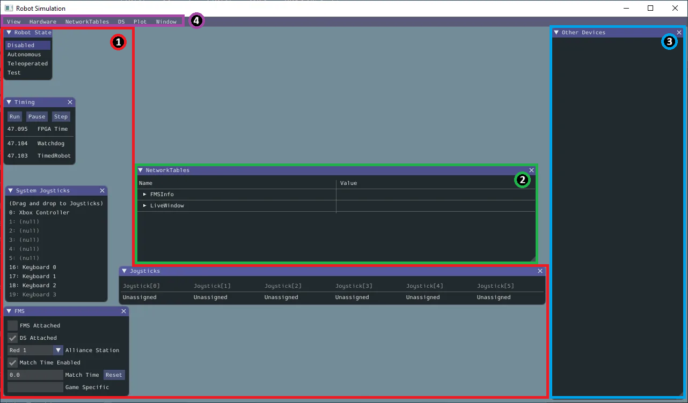

<!DOCTYPE html>
<html lang="en">
  <head>
    <meta charset="utf-8" />
    <meta name="viewport" content="width=device-width, initial-scale=1.0, maximum-scale=1.0, user-scalable=no" />

    <title>Simulation dans WPILib</title>
    <link rel="stylesheet" href="../assets/dist/reveal.css" />
    <link rel="stylesheet" href="../assets/dist/theme/white.css" id="theme" />
    <link rel="stylesheet" href="../assets/css/vs2015.css" />
	<link rel="stylesheet" href="../assets/css/layout.css" />
	<link rel="stylesheet" href="../assets/plugin/customcontrols/style.css">
	<link rel="stylesheet" href="../assets/plugin/chalkboard/style.css">
	<link rel="icon" type="image/svg+xml" href="../assets/logotix-2.svg">
    <script defer src="../assets/dist/fontawesome/all.min.js"></script>
	<script id="MathJax-script" async src="https://cdn.jsdelivr.net/npm/mathjax@4/tex-mml-chtml.js"></script>

	<script type="text/javascript">
		var forgetPop = true;
		function onPopState(event) {
			if(forgetPop){
				forgetPop = false;
			} else {
				parent.postMessage(event.target.location.href, "app://obsidian.md");
			}
        }
		window.onpopstate = onPopState;
		window.onmessage = event => {
			if(event.data == "reload"){
				window.document.location.reload();
			}
			forgetPop = true;
		}

		function fitElements(){
			const itemsToFit = document.getElementsByClassName('fitText');
			for (const item in itemsToFit) {
				if (Object.hasOwnProperty.call(itemsToFit, item)) {
					var element = itemsToFit[item];
					fitElement(element,1, 1000);
					element.classList.remove('fitText');
				}
			}
		}

		function fitElement(element, start, end){

			let size = (end + start) / 2;
			element.style.fontSize = `${size}px`;

			if(Math.abs(start - end) < 1){
				while(element.scrollHeight > element.offsetHeight){
					size--;
					element.style.fontSize = `${size}px`;
				}
				return;
			}

			if(element.scrollHeight > element.offsetHeight){
				fitElement(element, start, size);
			} else {
				fitElement(element, size, end);
			}		
		}


		document.onreadystatechange = () => {
			fitElements();
			if (document.readyState === 'complete') {
				if (window.location.href.indexOf("?export") != -1){
					parent.postMessage(event.target.location.href, "app://obsidian.md");
				}
				if (window.location.href.indexOf("print-pdf") != -1){
					let stateCheck = setInterval(() => {
						clearInterval(stateCheck);
						window.print();
					}, 250);
				}
			}
	};


        </script>
  </head>
  <body>
    <div class="reveal">
      <div class="slides"><section  data-markdown><script type="text/template"><!-- .slide: class="drop" -->
<div class="" style="position: absolute; left: 0px; top: 0px; height: 700px; width: 960px; min-height: 700px; display: flex; flex-direction: column; align-items: center; justify-content: center" absolute="true">

# Cours 12
## Simulation dans WPILib

</div></script></section><section><section  data-markdown><script type="text/template"><!-- .slide: class="drop" -->
<div class="" style="position: absolute; left: 0px; top: 0px; height: 700px; width: 960px; min-height: 700px; display: flex; flex-direction: column; align-items: center; justify-content: center" absolute="true">

## Comment Simuler du code FRC :

1. &shy;<!-- .element: class="fragment" data-fragment-index="1" --> Démarer la simulation avec la commande `.\gradlew simulateExternalNativeDebug` ou l'extension VSCode de WPILib
2. &shy;<!-- .element: class="fragment" data-fragment-index="2" --> C'est tout! Tout le code autre que celui qui active des systèmes ou lis des capteurs est maintenant simulé
3. &shy;<!-- .element: class="fragment" data-fragment-index="3" --> Tu peux regarder le SimGUI ou te connecter au NetworkTables grace au Dashboard de ton choix

</div></script></section><section  data-markdown><script type="text/template"><!-- .slide: class="drop" -->
<div class="" style="position: absolute; left: 0px; top: 0px; height: 700px; width: 960px; min-height: 700px; display: flex; flex-direction: column; align-items: center; justify-content: center" absolute="true">

## SimGUI :



</div></script></section><section  data-markdown><script type="text/template"><!-- .slide: class="drop" -->
<div class="" style="position: absolute; left: 0px; top: 0px; height: 700px; width: 960px; min-height: 700px; display: flex; flex-direction: column; align-items: center; justify-content: center" absolute="true">

## Explication des parties du SimGUI :

1. À gauche différentes parties simulant la DriverStation (Si la vraie n'est pas utilisée)
2. Au centre des informations sur NetworkTables
3. À droite la liste (ici vide) de certaines composantes simulées (moteurs et capteurs surtout)
4. En haut à droite, options extra (e.g. LEDs, graphiques)

</div></script></section></section><section  data-markdown><script type="text/template"><!-- .slide: class="drop" -->
<div class="" style="position: absolute; left: 0px; top: 0px; height: 700px; width: 960px; min-height: 700px; display: flex; flex-direction: column; align-items: center; justify-content: center" absolute="true">

## Différentes facettes de la simulation d'un mécanisme :

- &shy;<!-- .element: class="fragment" data-fragment-index="1" --> Simuler un moteur
- &shy;<!-- .element: class="fragment" data-fragment-index="2" --> Décrire le mécanisme
- &shy;<!-- .element: class="fragment" data-fragment-index="3" --> Prévoir comment le mécanisme va réagir
- &shy;<!-- .element: class="fragment" data-fragment-index="4" --> Faire avancer la simulation

</div></script></section><section><section  data-markdown><script type="text/template"><!-- .slide: class="drop" -->
<div class="" style="position: absolute; left: 0px; top: 0px; height: 700px; width: 960px; min-height: 700px; display: flex; flex-direction: column; align-items: center; justify-content: center" absolute="true">

## Simuler un moteur (REVLib) :

- &shy;<!-- .element: class="fragment" data-fragment-index="1" --> Déclarer le moteur utilisé
- &shy;<!-- .element: class="fragment" data-fragment-index="2" --> Déclarer l'objet SparkMax
- &shy;<!-- .element: class="fragment" data-fragment-index="3" --> Déclarer l'objet SparkMaxSim

</div></script></section><section  data-markdown><script type="text/template"><!-- .slide: class="drop" -->
<div class="" style="position: absolute; left: 0px; top: 0px; height: 700px; width: 960px; min-height: 700px; display: flex; flex-direction: column; align-items: center; justify-content: center" absolute="true">

### Déclarer le moteur utilisé :

```c++
#include <frc/system/plant/DCMotor.h>

frc::DCMotor* mGearBox = new frc::DCMotor{
    frc::DCMotor::NEO(kMotorNumber)};
```

&shy;<!-- .element: class="fragment" data-fragment-index="1" --> Si `kMotorNumber` n'est pas précisé, la gear box aura un seul moteur

</div></script></section><section  data-markdown><script type="text/template"><!-- .slide: class="drop" -->
<div class="" style="position: absolute; left: 0px; top: 0px; height: 700px; width: 960px; min-height: 700px; display: flex; flex-direction: column; align-items: center; justify-content: center" absolute="true">

### Déclarer l'objet SparkMax :

```c++
#include <rev/SparkMax.h>

rev::spark::SparkMax* mSparkMax = new rev::spark::SparkMax{
    kCANid,
    rev::spark::SparkLowLevel::MotorType::kBrushless};
```

</div></script></section><section  data-markdown><script type="text/template"><!-- .slide: class="drop" -->
<div class="" style="position: absolute; left: 0px; top: 0px; height: 700px; width: 960px; min-height: 700px; display: flex; flex-direction: column; align-items: center; justify-content: center" absolute="true">

### Déclarer l'objet SparkMaxSim :

```c++
#include <rev/sim/SparkMaxSim.h>

rev::spark::SparkMaxSim* mSparkMaxSim = new
    rev::spark::SparkMaxSim{mSparkMax, mGearBox};
```

</div></script></section><section  data-markdown><script type="text/template"><!-- .slide: class="drop" -->
<div class="" style="position: absolute; left: 0px; top: 0px; height: 700px; width: 960px; min-height: 700px; display: flex; flex-direction: column; align-items: center; justify-content: center" absolute="true">

### Simuler simplement le SparkMax :

```c++
mSparkMaxSim->SetAppliedOutput(output);
```
```c++
mSparkMaxSim->SetPosition(position);
```
```c++
mSparkMaxSim->SetVelocity(velocity);
```
```c++
mSparkMaxSim->iterate(velocity, 12, 0.02);
// Change à la fois la vitesse et la position
```

</div></script></section></section><section><section  data-markdown><script type="text/template"><!-- .slide: class="drop" -->
<div class="" style="position: absolute; left: 0px; top: 0px; height: 700px; width: 960px; min-height: 700px; display: flex; flex-direction: column; align-items: center; justify-content: center" absolute="true">

## Décrire le mécanisme :

- &shy;<!-- .element: class="fragment" data-fragment-index="1" --> Heureusement, WPILib nous fournit des classes qui aident à la description des mécanismes
- &shy;<!-- .element: class="fragment" data-fragment-index="2" --> Il faut donc créer une commande prédictive (plant)

</div></script></section><section  data-markdown><script type="text/template"><!-- .slide: class="drop" -->
<div class="" style="position: absolute; left: 0px; top: 0px; height: 700px; width: 960px; min-height: 700px; display: flex; flex-direction: column; align-items: center; justify-content: center" absolute="true">

### Commande prédictive d'un ascenseur/grimpeur :

```cpp
#include <frc/system/LinearSystem.h>
#include <frc/system/plant/LinearSystemId.h>

frc::LinearSystem<2, 1, 2>* mElevatorPlant = new
    frc::LinearSystem<2, 1, 2>{
        frc::LinearSystemId::ElevatorSystem(
            *mGearBox,
            kMass,
            kDrumRadius,
            kGearRatio)};
```

</div></script></section><section  data-markdown><script type="text/template"><!-- .slide: class="drop" -->
<div class="" style="position: absolute; left: 0px; top: 0px; height: 700px; width: 960px; min-height: 700px; display: flex; flex-direction: column; align-items: center; justify-content: center" absolute="true">

### Commande prédictive d'un lanceur :

```cpp
#include <frc/system/LinearSystem.h>
#include <frc/system/plant/LinearSystemId.h>

frc::LinearSystem<1, 1, 1>* mFlywheelPlant = new
    frc::LinearSystem<1, 1, 1>{
        frc::LinearSystemId::FlywheelSystem(
            *mGearBox,
            kMOI,
            kGearRatio)};
```

</div></script></section><section  data-markdown><script type="text/template"><!-- .slide: class="drop" -->
<div class="" style="position: absolute; left: 0px; top: 0px; height: 700px; width: 960px; min-height: 700px; display: flex; flex-direction: column; align-items: center; justify-content: center" absolute="true">

### Commande prédictive d'un bras/pivot :

```cpp
#include <frc/system/LinearSystem.h>
#include <frc/system/plant/LinearSystemId.h>

frc::LinearSystem<2, 1, 2>* mArmPlant = new
    frc::LinearSystem<2, 1, 2>{
        frc::LinearSystemId::SingleJointedArmSystem(
            *mGearBox,
            kMOI,
            kGearRatio)};
```

</div></script></section></section><section><section  data-markdown><script type="text/template"><!-- .slide: class="drop" -->
<div class="" style="position: absolute; left: 0px; top: 0px; height: 700px; width: 960px; min-height: 700px; display: flex; flex-direction: column; align-items: center; justify-content: center" absolute="true">

## Prévoir comment le mécanisme va réagir :

- &shy;<!-- .element: class="fragment" data-fragment-index="1" --> Encore une fois, WPILib nous fournit des classes qui aident à la simulation de mécanismes
- &shy;<!-- .element: class="fragment" data-fragment-index="2" --> Il faut donc créer un objet simulant le mécanisme grâce à la commande prédictive

</div></script></section><section  data-markdown><script type="text/template"><!-- .slide: class="drop" -->
<div class="" style="position: absolute; left: 0px; top: 0px; height: 700px; width: 960px; min-height: 700px; display: flex; flex-direction: column; align-items: center; justify-content: center" absolute="true">

### Simulation d'un ascenseur/grimpeur :

```cpp
#include <frc/simulation/ElevatorSim.h>

frc::sim::ElevatorSim* mElevatorSim = new
    frc::sim::ElevatorSim{
        *mElevatorPlant,
        *mGearBox,
        kMinHeight,
        kMaxHeight,
        kDoGravitySimulation,
        kStartingHeight,
        kStdDevs};
```

Le `kStdDevs` détermine à quel point on croit les mesures, ici on utilisera `{0.0, 0.0}` pour les croire totalement

</div></script></section><section  data-markdown><script type="text/template"><!-- .slide: class="drop" -->
<div class="" style="position: absolute; left: 0px; top: 0px; height: 700px; width: 960px; min-height: 700px; display: flex; flex-direction: column; align-items: center; justify-content: center" absolute="true">

### Simulation d'un lanceur :

```cpp
#include <frc/simulation/FlywheelSim.h>

frc::sim::FlywheelSim* mFlywheelSim = new
    frc::sim::FlywheelSim{
        *mFlywheelPlant,
        *mGearBox,
        kStdDevs};
```

Le `kStdDevs` détermine à quel point on croit les mesures, ici on utilisera `{0.0}` pour les croire totalement

</div></script></section><section  data-markdown><script type="text/template"><!-- .slide: class="drop" -->
<div class="" style="position: absolute; left: 0px; top: 0px; height: 700px; width: 960px; min-height: 700px; display: flex; flex-direction: column; align-items: center; justify-content: center" absolute="true">

### Simulation d'un bras/pivot :

```cpp
#include <frc/simulation/SingleJointedArmSim.h>

frc::sim::SingleJointedArmSim* mArmSim = new
    frc::sim::SingleJointedArmSim{
        *mArmPlant,
        *mGearBox,
        kGearRatio,
        kArmLenght,
        kMinAngle,
        kMaxAngle,
        kDoGravitySimulation,
        kStartingAngle,
        kStdDevs};
```

Le `kStdDevs` détermine à quel point on croit les mesures, ici on utilisera `{0.0, 0.0}` pour les croire totalement

</div></script></section></section><section><section  data-markdown><script type="text/template"><!-- .slide: class="drop" -->
<div class="" style="position: absolute; left: 0px; top: 0px; height: 700px; width: 960px; min-height: 700px; display: flex; flex-direction: column; align-items: center; justify-content: center" absolute="true">

## Faire avancer la simulation :

1. &shy;<!-- .element: class="fragment" data-fragment-index="1" --> Donner l'input à la simulation
2. &shy;<!-- .element: class="fragment" data-fragment-index="2" --> Donner le temps à avancer
3. &shy;<!-- .element: class="fragment" data-fragment-index="3" --> Itérer le moteur sim avec la prédiction de la simulation

</div></script></section><section  data-markdown><script type="text/template"><!-- .slide: class="drop" -->
<div class="" style="position: absolute; left: 0px; top: 0px; height: 700px; width: 960px; min-height: 700px; display: flex; flex-direction: column; align-items: center; justify-content: center" absolute="true">

### Donner l'input à la simulation :

L'input doit être en volts
Cette valeur peut être obtenu grace à un feedforward

```cpp
mMecaSim->SetInputVoltage(iVoltage);
mMecaSim->SetInputVoltage(mFeedforward->Calculate(iVelocity));
```

</div></script></section><section  data-markdown><script type="text/template"><!-- .slide: class="drop" -->
<div class="" style="position: absolute; left: 0px; top: 0px; height: 700px; width: 960px; min-height: 700px; display: flex; flex-direction: column; align-items: center; justify-content: center" absolute="true">

### Donner le temps à avancer :

```cpp
mMecaSim->Update(0.02_s);
```

</div></script></section><section  data-markdown><script type="text/template"><!-- .slide: class="drop" -->
<div class="" style="position: absolute; left: 0px; top: 0px; height: 700px; width: 960px; min-height: 700px; display: flex; flex-direction: column; align-items: center; justify-content: center" absolute="true">

### Itérer le moteur sim avec la prédiction de la simulation :

```cpp
mSparkMaxSim->iterate(mMecaSim->GetVelocity().value(), 12, 0.02);
```

&shy;<!-- .element: class="fragment" data-fragment-index="1" --> La méthode `iterate` de `SparkMaxSim` prend les paramètres suivants:
1. &shy;<!-- .element: class="fragment" data-fragment-index="2" --> La vitesse (par défault en rpm mais mis à l'échelle par le `VelocityConversionFactor` de la configuration)
2. &shy;<!-- .element: class="fragment" data-fragment-index="3" --> Le voltage disponible (estimé à 12V)
3. &shy;<!-- .element: class="fragment" data-fragment-index="4" --> Le temps sur lequel itérer (20 ms => 0.02s)

</div></script></section></section>
    </div>

    <script src="../assets/dist/reveal.js"></script>

    <script src="../assets/plugin/markdown/markdown.js"></script>
    <script src="../assets/plugin/highlight/highlight.js"></script>
    <script src="../assets/plugin/zoom/zoom.js"></script>
    <script src="../assets/plugin/notes/notes.js"></script>
    <script src="../assets/plugin/math/math.js"></script>
	<script src="../assets/plugin/mermaid/mermaid.js"></script>
	<script src="../assets/plugin/chart/chart.min.js"></script>
	<script src="../assets/plugin/chart/plugin.js"></script>
	<script src="../assets/plugin/customcontrols/plugin.js"></script>
	<script src="../assets/plugin/chalkboard/plugin.js"></script>

    <script>
      function extend() {
        var target = {};
        for (var i = 0; i < arguments.length; i++) {
          var source = arguments[i];
          for (var key in source) {
            if (source.hasOwnProperty(key)) {
              target[key] = source[key];
            }
          }
        }
        return target;
      }

	  function isLight(color) {
		let hex = color.replace('#', '');

		// convert #fff => #ffffff
		if(hex.length == 3){
			hex = `${hex[0]}${hex[0]}${hex[1]}${hex[1]}${hex[2]}${hex[2]}`;
		}

		const c_r = parseInt(hex.substr(0, 2), 16);
		const c_g = parseInt(hex.substr(2, 2), 16);
		const c_b = parseInt(hex.substr(4, 2), 16);
		const brightness = ((c_r * 299) + (c_g * 587) + (c_b * 114)) / 1000;
		return brightness > 155;
	}

	var bgColor = getComputedStyle(document.documentElement).getPropertyValue('--r-background-color').trim();
	var isLight = isLight(bgColor);

	if(isLight){
		document.body.classList.add('has-light-background');
	} else {
		document.body.classList.add('has-dark-background');
	}

      // default options to init reveal.js
      var defaultOptions = {
        controls: true,
        progress: true,
        history: true,
        center: true,
        transition: 'default', // none/fade/slide/convex/concave/zoom
        plugins: [
          RevealMarkdown,
          RevealHighlight,
          RevealZoom,
          RevealNotes,
          RevealMath.MathJax3,
		  RevealMermaid,
		  RevealChart,
		  RevealCustomControls,
		  RevealChalkboard, 
        ],


    	allottedTime: 120 * 1000,

		mathjax3: {
			mathjax: '../assets/plugin/math/mathjax/tex-mml-chtml.js',
		},
		markdown: {
		  gfm: true,
		  mangle: true,
		  pedantic: false,
		  smartLists: false,
		  smartypants: false,
		},

		mermaid: {
			theme: isLight ? 'default' : 'dark',
		},

		customcontrols: {
			controls: [
				{id: 'toggle-overview',
				title: 'Toggle overview (O)',
				icon: '<i class="fa fa-th"></i>',
				action: 'Reveal.toggleOverview();'
				},
				{ icon: '<i class="fa fa-pen-square"></i>',
				title: 'Toggle chalkboard (B)',
				action: 'RevealChalkboard.toggleChalkboard();'
				},
				{ icon: '<i class="fa fa-pen"></i>',
				title: 'Toggle notes canvas (C)',
				action: 'RevealChalkboard.toggleNotesCanvas();'
				},
				{ icon: '<i class="fa fa-home" onclick = "window.location.href = \'../index.html\';"></i>',
				title: 'Page d\'accueil',
				action: ''
				},
			]
		},
      };

      // options from URL query string
      var queryOptions = Reveal().getQueryHash() || {};

      var options = extend(defaultOptions, {"width":960,"height":700,"margin":0.04,"controls":true,"progress":true,"slideNumber":false,"transition":"slide","transitionSpeed":"normal"}, queryOptions);
    </script>

    <script>
      Reveal.initialize(options);
    </script>
  </body>

  <!-- created with Advanced Slides -->
</html>
